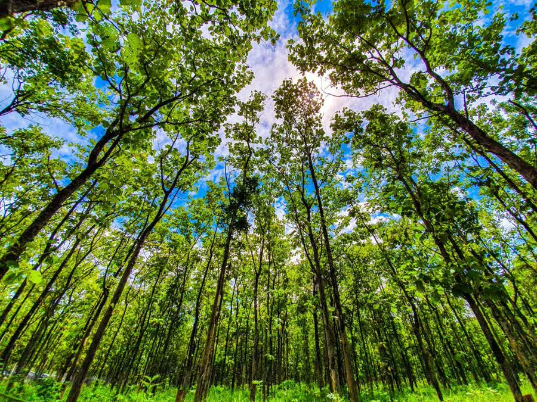
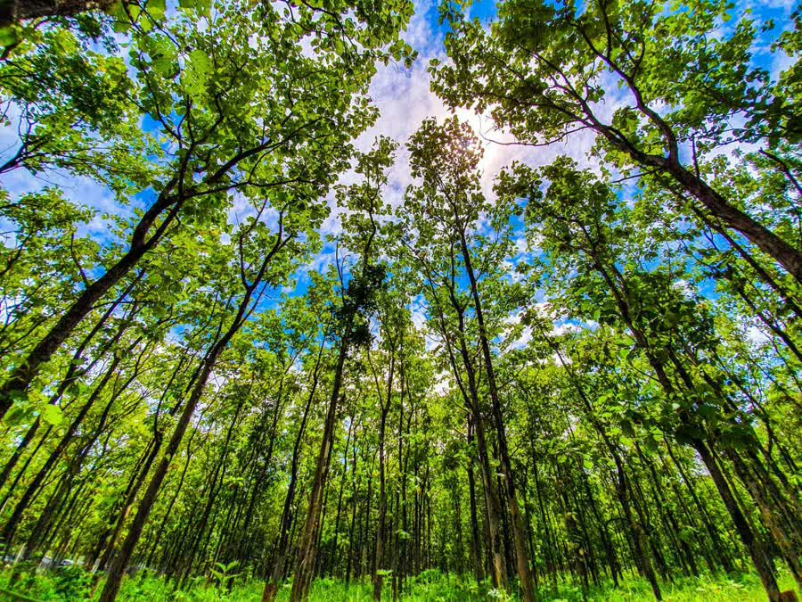
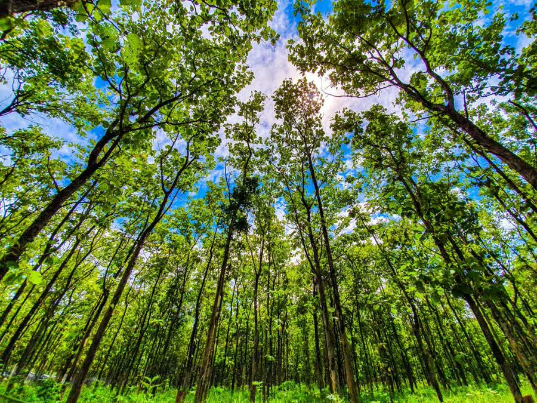

 ປ່າໄມ້ທີ່ອຸດົມສົມບູນຂອງປະເທດລາວແບ່ງອອກເປັນ 4 ປະເພດດັ່ງນີ້:
• ປ່າດົງດິບ
• ປ່າປະສົມ
• ປ່າໄມ້ໃບເຂັມ
• ປ່າຄັງ ແລະ ປ່າເລົ່າ

ປ່າດົງດິບ ເປັນປ່າຕຶບດົງໜາທີ່ປະກອບດ້ວຍຕົ້ນໄມ້ໃຫຍ່ ແລະ ສູງຫຼາຍຊະນິດເຊັ່ນ: ໄມ້ຍາງ, ໄມ້ບາກ,ໄມ້ແຄນ, ໄມ້ຄະຍູງ, ໄມ້ເປືອຍ...ປ່າປະເພດດັ່ງກ່າວແບ່ງອອກເປັນ 3 ຊັ້ນຄື: ຊັ້ນຕົ້ນໄມ້ໃຫຍ່-ສູງ(ຊັ້ນເທິງ), ຊັ້ນຕົ້ນໄມ້ໃຫຍ່ປານກາງ(ຊັ້ນກາງ)ແລະຊັ້ນພື້ນປ່າ(ຊັ້ນຈຳດິນ) ເຊິ່ງແຕ່ລະຊັ້ນມັກມີເຄືອເຂົາກ້ຽວຕິດຕໍ່ໃສ່ກັນ.
ປ່າດົງດິບໃນລາວຖືກພົບເຫັນຢູ່ຫຼາຍບ່ອນໃນເຂດທົ່ງພຽງ ຫຼື ຢູ່ຕາມແຄມ ແມ່ນ້ຳ, ປ່າປະເພດນີ້ມີຫຼາຍຢູ່ແຂວງວຽງຈັນ, ຫຼວງນ້ຳທາ, ບໍລິຄຳໄຊ, ຄຳມ່ວນ, ສາລະວັນ, ເຊກອງ ແລະ ຈຳປາສັກ. ນອກນັ້ນຍັງມີຢູ່ເຂດພູມສັນຖານສູງເຊັ່ນ: ເປີ້ນພູຫຼວງ, ພູພຽງເມືອງພວນ ແລະ ເດັ່ນສຸດແມ່ນຢູ່ພູພຽງຕ່າງໆທາງພາກໃຕ້.


ປ່າປະສົມ ເປັນປາຕຶບປານກາງ ຫຼື ເຄິ່ງຕຶບເຊິ່ງມີຫຼາຍກວ່າໝູ່ຢູ່ປະເທດລາວ ຄື ກວມເອົາເນື້ອທີ່ເຄິ່ງໜຶ່ງຂອງເນື້ອທີ່ປ່າທັງໝົດ. ມີຢູ່ເກືອບທຸກໆແຂວງ ແຕ່ຫຼາຍກວ່າໝູ່ຢູ່ແຂວງຫຼວງນ້ຳທາ, ໄຊຍະບູລີ, ວຽງຈັນ, ບໍລິຄຳໄຊ, ຄຳມ່ວນ, ສະຫວັນນະເຂດ ແລະ ສາລະວັນ. ປ່າສົງເປັນປ່າທີ່ມີລັກສະນະເຊື່ອມຕໍ່ກັບ ໂຄກ ແລະ ປະກອບດ້ວຍໄມ້ຊະນິດຕ່າງໆເຊິ່ງມີທັງຊະນິດໃບຫຼົ່ນໃນລະດູແລ້ງ ແລະ ຊະນິດທີ່ມີໃບຂຽວຢູ່ຕະຫຼອດປີ, ບາງທ້ອງຖິ່ນກໍມີທັງໄມ້ປ້ອງປະປົນຢູ່. ດ້ວຍເຫດນີ້ ເພິ່ນຈຶ່ງມັກເອີ້ນວ່າ: ປ່າປະສົມ. ປ່າປະເພດນີ້ມີໄມ້ໃຫຍ່ເຊັ່ນ: ໄມ້ແຕ້ຂ່າ, ໄມ້ແດງ, ໄມ້ດູ່, ໄມ້ເປືອຍ... ພິເສດ ປ່າສົງເຂດຫ້ວຍຊາຍ, ປາກລາຍ ແລະ ຫຼວງພະບາງ ມີໄມ້ສັກກວມຈຳນວນຫຼວງຫຼາຍ.


ປ່າໄມ້ໃບເຂັມຢູ່ລາວລວມມີຊະນິດຕ່າງໆເຊັ່ນ: ໄມ້ແປກ, ໄມ້ຮິ້ງ, ໄມ້ສົນ... ໃນນັ້ນ ໄມ້ແປກ(ແປກແດງ ແລະ ແປກຄົວ) ກວມປະລິມານຫຼາຍກວ່າໝູ່. ໄມ້ແປກມີຄວາມທົນທານຕໍ່ອາກາດໜາວ ແລະ ແຫ້ງແລ້ງທົນທານຕໍ່ຄວາມຈືດຈາງຂອງດິນໄດ້ດີ. ເຂດທີ່ມີປ່າແປກຫຼາຍແມ່ນເເຂວງຫົວພັນ, ຊຽງຂວາງ, ຄຳມ່ວນ, ເຊກອງ, ສະຫວັນນະເຂດ, ພູພຽງຕະໂອ້ຍ, ພູພຽງບໍລະເວນ...
ຢູ່ຕາມປ່າແປກນີ້ກໍມັກມີຕົ້ນໄມ້ໃບໃຫຍ່ປະປົນນຳ ເຊິ່ງສ່ວນຫຼາຍແມ່ນໄມ້ດູ່ຄ່າງ ແລະ ໄມ້ກໍ່. ຢູ່ພື້ນປ່າແປກສ່ວນຫຼາຍມັກມີຫຍ້າຄາ.


ປ່າຄັງ ແລະ ປ່າເລົ່າ ແມ່ນປ່າທີ່ຜັນແປມາຈາກ ປ່າທີ່ຖືກໄຟລາມເຜົາຫຼາຍເທື່ອ, ແຕ່ມີລັກສະນະຂອງໄຮ່ຮົກເຮື້ອ ເຊິ່ງປະກອບດ້ວຍ: ກໍເລົາ, ຕົ້ນຫຍ້າຂີວ, ຫຍ້າໝາດ, ຕົ້ນໜາມຫັນ...ເຊິ່ງເປັນພືດປະເພດທົນທານຕໍ່ຄວາມແຫ້ງແລ້ງ